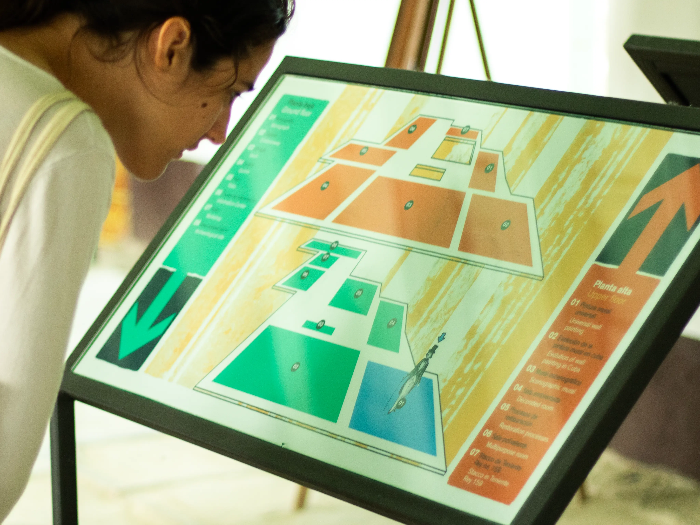
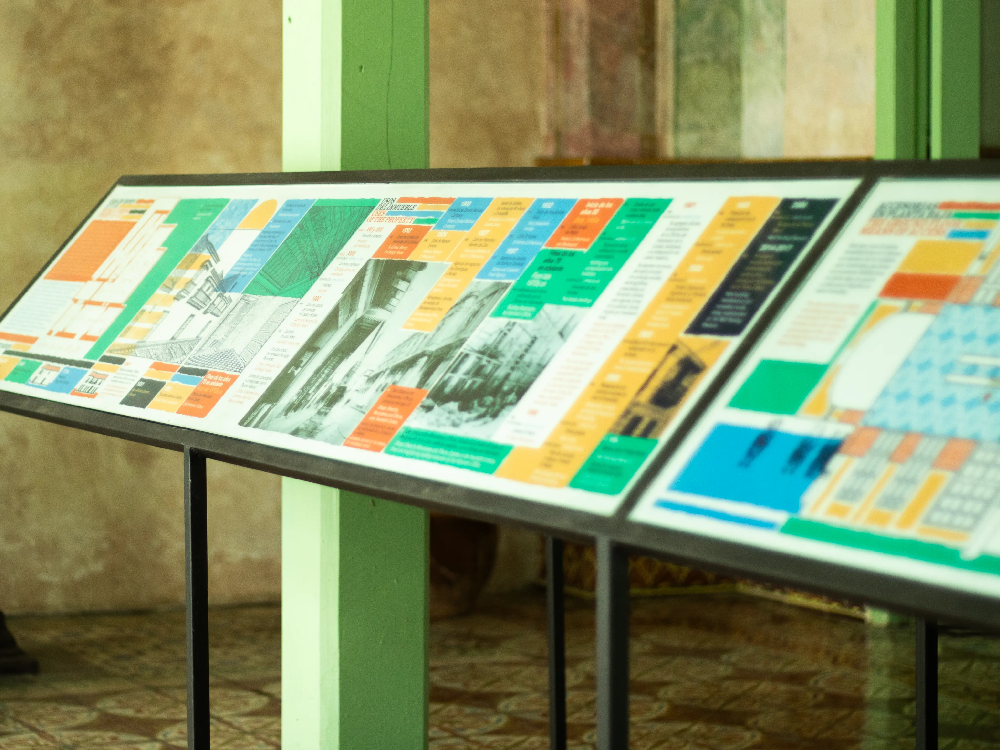
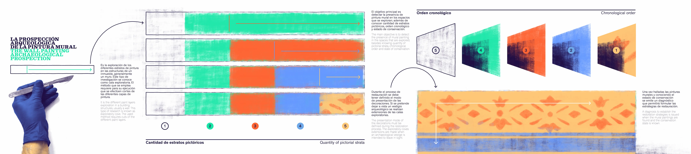
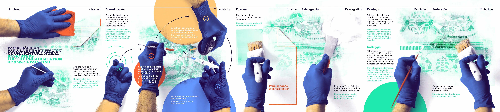
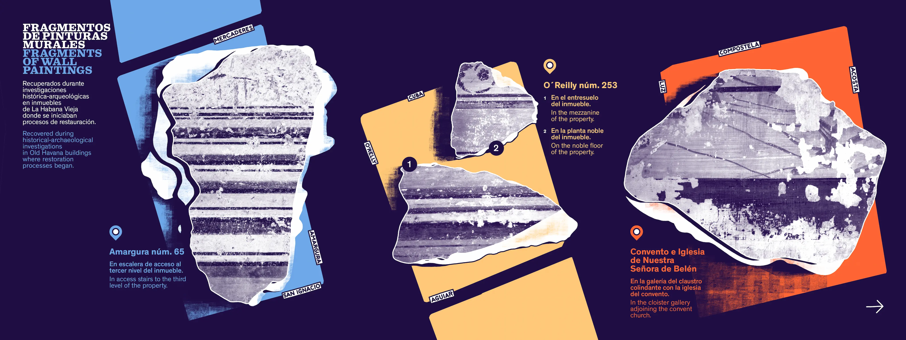
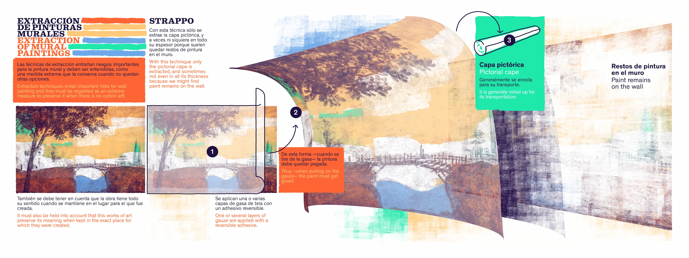
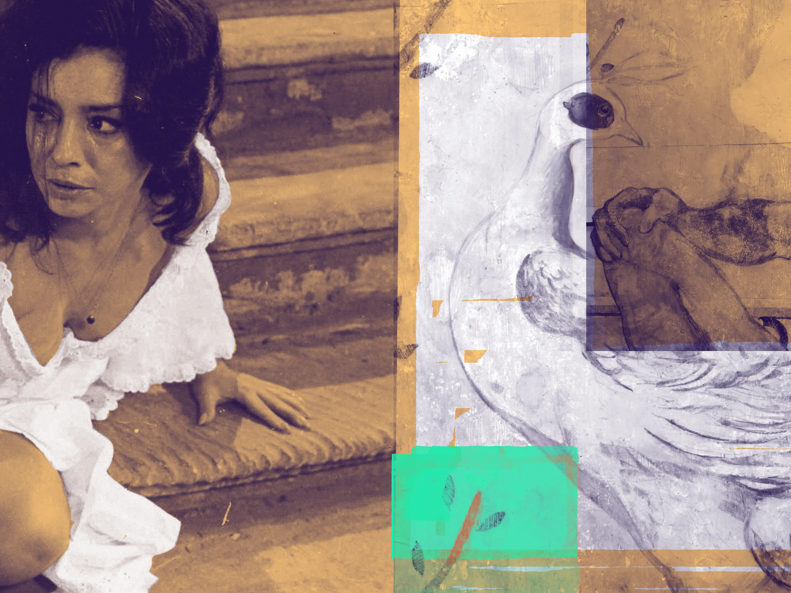
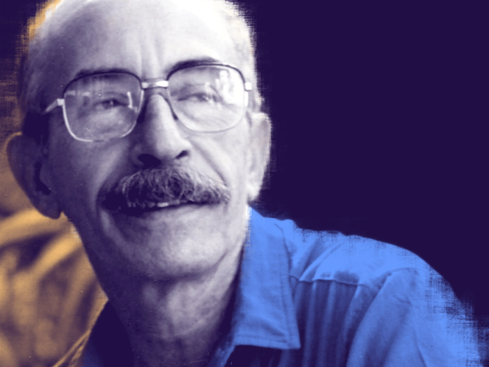

Environmental graphics and wayfinding design for the Mural Painting Museum, showcasing archaeological processes and restoration techniques.
- Research
- Information Design
- Illustration







